Two Pence
Elizabeth II (1971-2008)
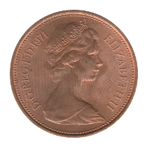 1971
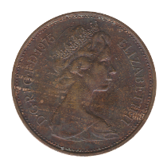 1975
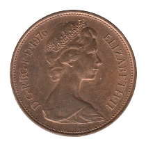 1976
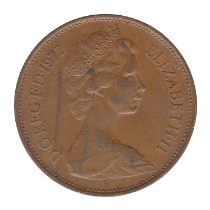 1977
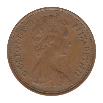 1978
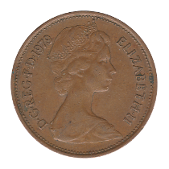 1979
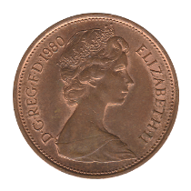 1980
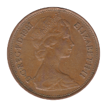 1981
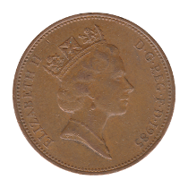 1985
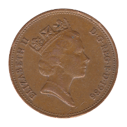 1986
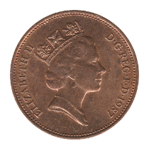 1987
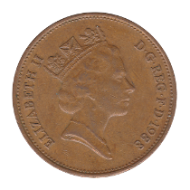 1988
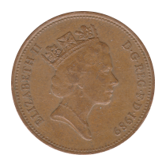 1989
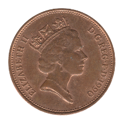 1990
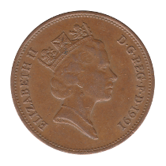 1991
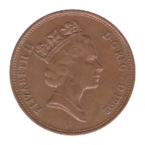 1992
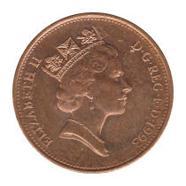 1993
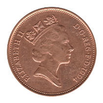 1994
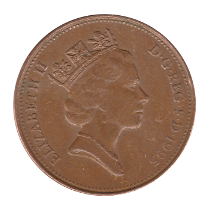 1995
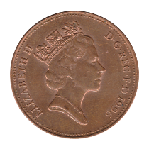 1996
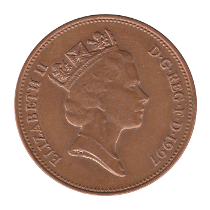 1997
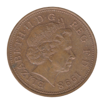 1998 NM
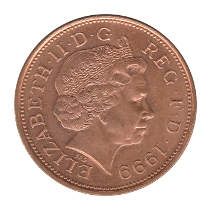 1999
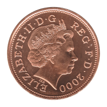 2000
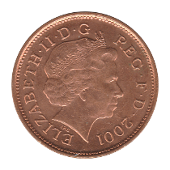 2001
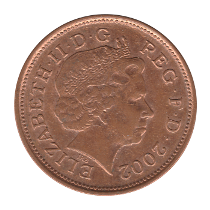 2002
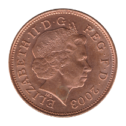 2003
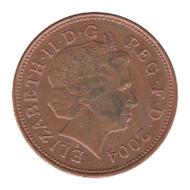 2004
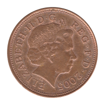 2005
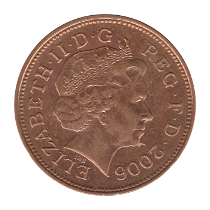 2006
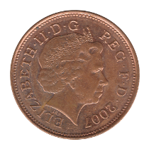 2007
Elizabeth II (2008-Date)
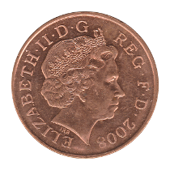 2008
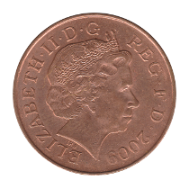 2009
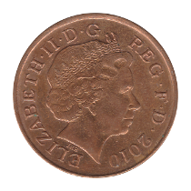 2010
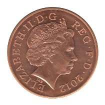 2012
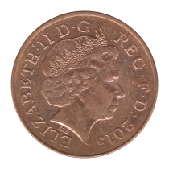 2015 4th Portrait
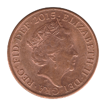 2015 5th Portrait
Back to United Kingdom
Back to Home